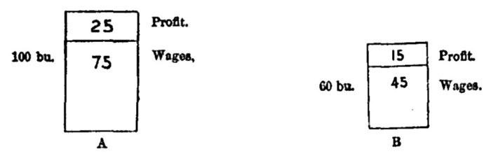

Chapter 18: Ultimate Analysis Of Cost Of Production¶
18.1 § 1. Of Labor, the principal Element in Cost of Production¶
The component elements of Cost of Production have been set forth in the First Part of this inquiry.1 The principal of them, and so much the principal as to be nearly the sole, was found to be Labor. What the production of a thing costs to its producer, or its series of producers, is the labor expended in producing it. If we consider as the producer the capitalist who makes the advances, the word Labor may be replaced by the word Wages: what the produce costs to him, is the wages which he has had to pay. At the first glance, indeed, this seems to be only a part of his outlay, since he has not only paid wages to laborers, but has likewise provided them with tools, materials, and perhaps buildings. These tools, materials, and buildings, however, were produced by labor and capital; and their value, like that of the article to the production of which they are subservient, depends on cost of production, which again is resolvable into labor. The cost of production of broadcloth does not wholly consist in the wages of weavers; which alone are directly paid by the cloth-manufacturer. It consists also of the wages of spinners and wool-combers, and, it may be added, of shepherds, all of which the clothier has paid for in the price of yarn. It consists, too, of the wages of builders and brick-makers, which he has reimbursed in the contract price of erecting his factory. It partly consists of the wages of machine-makers, iron-founders, and miners. And to these must be added the wages of the carriers who transported any of the means and appliances of the production to the place where they were to be used, and the product itself to the place where it is to be sold.
Confirmation is here given, in the above words, of the opinion that, in Mr. Mill's mind, Cost of Production was looked at wholly from the stand-point of the capitalist, and was identical with Cost of Labor to the capitalist.
The value of commodities, therefore, depends principally (we shall presently see whether it depends solely) on the quantity of labor required for their production, including in the idea of production that of conveyance to the market. But since the cost of production to the capitalist is not labor but wages, and since wages may be either greater or less, the quantity of labor being the same, it would seem that the value of the product can not be determined solely by the quantity of labor, but by the quantity together with the remuneration, and that values must partly depend on wages.
Now the relation of one thing to another can not be altered by any cause which affects them both alike. A rise or fall of general wages is a fact which affects all commodities in the same manner, and therefore affords no reason why they should exchange for each other in one rather than in another proportion. Though there is no such thing as a general rise of values, there is such a thing as a general rise of prices. As soon as we form distinctly the idea of values, we see that high or low wages can have nothing to do with them; but that high wages make high prices, is a popular and widely spread opinion. The whole amount of error involved in this proposition can only be seen thoroughly when we come to the theory of money; at present we need only say that if it be true, there can be no such thing as a real rise of wages; for if wages could not rise without a proportional rise of the price of everything, they could not, for any substantial purpose, rise at all. It must be remembered, too, that general high prices, even supposing them to exist, can be of no use to a producer or dealer, considered as such; for, if they increase his money returns, they increase in the same degree all his expenses. There is no mode in which capitalists can compensate themselves for a high cost of labor, through any action on values or prices. It can not be prevented from taking its effect in low profits. If the laborers really get more, that is, get the produce of more labor, a smaller percentage must remain for profit.
18.2 § 2. Wages affect Values, only if different in different employments; “ non-competing groups. ”¶
Although, however, general wages, whether high or low, do not affect values, yet if wages are higher in one employment than another, or if they rise or fall permanently in one employment without doing so in others, these inequalities do really operate upon values. Things, for example, which are made by skilled labor, exchange for the produce of a much greater quantity of unskilled labor, for no reason but because the labor is more highly paid. We have before remarked that the difficulty of passing from one class of employments to a class greatly superior has hitherto caused the wages of all those classes of laborers who are separated from one another by any very marked barrier to depend more than might be supposed upon the increase of the population of each class considered separately, and that the inequalities in the remuneration of labor are much greater than could exist if the competition of the laboring people generally could be brought practically to bear on each particular employment. It follows from this that wages in different employments do not rise or fall simultaneously, but are, for short and sometimes even for long periods, nearly independent of one another. All such disparities evidently alter the relative cost of production of different commodities, and will therefore be completely represented in their natural or average value.
This is again a clear recognition of the influence of Mr. Cairnes's theory of “non-competing groups.”2
Wages do enter into value. The relative wages of the labor necessary for producing different commodities affect their value just as much as the relative quantities of labor. It is true, the absolute wages paid have no effect upon values; but neither has the absolute quantity of labor. If that were to vary simultaneously and equally in all commodities, values would not be affected. If, for instance, the general efficiency of all labor were increased, so that all things without exception could be produced in the same quantity as before with a smaller amount of labor, no trace of this general diminution of cost of production would show itself in the values of commodities.
18.3 § 3. Profits an element in Cost of Production¶
Thus far of labor or wages as an element in cost of production. But in our analysis, in the First Book, of the requisites of production, we found that there is another necessary element in it besides labor. There is also capital; and this being the result of abstinence, the produce, or its value, must be sufficient to remunerate, not only all the labor required, but the abstinence of all the persons by whom the remuneration of the different classes of laborers was advanced. The return from abstinence is Profit. And profit, we have also seen, is not exclusively the surplus remaining to the capitalist after he has been compensated for his outlay, but forms, in most cases, no unimportant part of the outlay itself. The flax-spinner, part of whose expenses consists of the purchase of flax and of machinery, has had to pay, in their price, not only the wages of the labor by which the flax was grown and the machinery made, but the profits of the grower, the flax-dresser, the miner, the iron-founder, and the machine-maker. All these profits, together with those of the spinner himself, were again advanced by the weaver, in the price of his material—linen yarn; and along with them the profits of a fresh set of machine-makers, and of the miners and iron-workers who supplied them with their metallic material. All these advances form part of the cost of production of linen. Profits, therefore, as well as wages, enter into the cost of production which determines the value of the produce.
18.4 § 4. Cost of Production properly represented by sacrifice, or cost, to the Laborer as well as to the Capitalist; the relation of this conception to the Cost of Labor¶
In discussing Cost of Labor (supra, pp. 225, 226), Mr. Mill found that the advances of the immediate producer consisted not only of wages, but also of tools, materials, etc., in the price of which he was including the profits of an auxiliary capitalist who advanced the capital for making these tools, etc. But, then, if a line of division were to be passed down through all these advances, separating wages from profits, he urged that, if all the capitalists (auxiliary and immediate both) were one, all the advances of the capitalist might be considered as wages. Profits did not form a part of the outlay to the capitalists in the former analysis. And this seems correct enough. Now, however, he suggests that the outlay of the immediate producers should include the profit of the auxiliary capitalist. More than this, Mr. Mill now includes in cost to the capitalist the profit of the immediate capitalist. For example, in his illustration of the manufacture of linen, he includes not merely the profit of the auxiliary capital engaged in spinning and weaving, but the profit of the immediate and last capitalist, the linen-manufacturer, also. This includes in the cost of producing an article a profit not realized until after the commodity is produced.
It is now time to give a more correct idea of cost of production. Every one admits, for example, that the “cost of production” of wheat is less in the United States than in England. If, for instance, three men with a capital of one hundred dollars may on a plot of ground, A, in the United States produce one hundred bushels of wheat, it will happen that the same men and capital will only produce sixty bushels on ground, B, in England.

In ordinary language, then, we say that the cost of production is greater in England than in the United States, because the same labor and capital here produce one hundred bushels for sixty in England; or, what amounts to the same thing, that less labor and capital could produce sixty bushels in the United States than sixty bushels in England. If we suppose that one fourth of the crop is profit, and three fourths is assigned to wages in both countries, then in the United States the one hundred dollars of capital receives twenty-five bushels of profit, while in England it receives only fifteen; and the three men receive as wages in the United States twenty-five bushels each, while in England they receive only fifteen bushels each. The first important induction to be made is that where cost of production is low, wages and profits are high. The high productiveness of extractive industries in the United States is the reason why wages and profits are higher here than in older countries.
Now the second important question is, Is cost of production made up of wages and profits, and is it true that the cost rises with a rise of wages and profits? Certainly not. Wages and profits are both higher in the United States than in England, but no one is so absurd as to say that the cost of production of wheat (as above explained) is higher here than there. It is exactly because cost of production of wheat is lower in the United States that wages and profits measured in wheat are higher here than in England. Therefore, it can not be granted, as Mr. Mill expounds the doctrine, that cost of production is made up of wages and profits. When we speak of an increased cost of production of a given article, we mean that its production requires more labor and capital than before; and of a decrease in cost of production, that it requires less labor and capital than before; meaning by “more labor” that a given quality of labor is exerted for a longer or shorter time, and by “more capital” that a greater or less quantity of wealth abstained from is employed for a longer or shorter time; or, in other words, that laborers and capitalists undergo more or less sacrifice in exertion and abstinence, respectively, to attain a given result. This is the contribution to cost of production made by Mr. Cairnes, and briefly defined as follows: “In the case of labor, the cost of producing a given commodity will be represented by the number of average laborers employed in its production—regard at the same time being had to the severity of the work and the degree of risk it involves—multiplied by the duration of their labors. In that of abstinence, the principle is analogous; the sacrifice will be measured by the quantity of wealth abstained from, taken in connection with the risk incurred, and multiplied by the duration of the abstinence.”3
This view of cost of production takes into consideration, in the act of production, what Mr. Mill does not include, the cost, or real sacrifice, to the laborer as well as to the capitalist. It may, then, be well to state the relations of cost of production, taken in this better sense, to value.
Within competing groups, where there is free choice for labor and capital to select the most remunerative occupations, the hardest and most disagreeable employments will be best paid, and the wages and profits will be in proportion to the sacrifice involved in each case. If so, the amount paid in wages and profits represents the sacrifices in each case. Now, the aggregate product of an industry is the source from which is drawn its wages and profits: the aggregate wages and profits, therefore, must vary with the value of the total product. If the total value depart from the sum hitherto sufficient to pay the given wages and profits, then some will be paid proportionally less than their sacrifice. The value of a commodity, therefore, within the competing group, must conform to the costs of production. If, for example (a), the value at any time were such as not to give the laborer the usual equivalent for his sacrifice, he would change his employment to another within the group where he could get it; if (b) the share of the capitalist were at any time insufficient to give him the usual reward for his abstinence, he would change the investment of his capital. Therefore, within such limits as allow a free competition of labor and capital, value must conform itself to cost of production.
Not so, however, with the products of non-competing industrial groups. As shown by Mr. Mill, labor does not pass freely from one employment to another; and it must be said that capital does not either, although vastly more ready to move than labor. In a large and thinly settled country capital does not move freely over the whole area of industry; if it did, different rates of profit would not prevail, as we all know they do, in the United States. Now, as before stated, the total value of the commodities resulting from the exertions of each group of producers is the source from which wages and profits are drawn. The aggregate wages and profits in each industry will vary with the value of the aggregate products. But this total value depends upon what it will exchange for of the products of other groups; that is, this value depends on the reciprocal demand of one group for the commodities of the other groups, as compared with the demand of the other groups for its products. For example, although cost of production is low in group A, if the demand from outside groups were to be strong, the exchange value of A's products would rise, and A would get more of other goods in exchange; that is, the total produce is large, but a second increment, arising from a higher exchange value, is to be shared among A's laborers and capitalists. A few years ago, about 1878-1879, the value of wheat in the United States rose because of the increased demand from Europe, where the harvests had been unusually deficient. There had been no falling off in the productiveness of the farming industry of the United States to cause the increased price; but the relative demand of other industrial groups for wheat, the product of the farming industry, raised the exchange value of wheat, and so increased the industrial rewards of those engaged as laborers and capitalists in farming. So it is to be concluded that since there is no free movement of labor and capital between non-competing groups, wages and profits may constantly remain at rates which are not in correspondence with the actual sacrifice, or cost, to labor and capital in different groups; hence, their products do not exchange for each other in proportion to their costs of production. Reciprocal demand is the law of their value.
It will be said, at once, that the foregoing conception of cost of production is entirely opposed to the language of practical men of affairs. They constantly speak of higher or lower wages as increasing their cost of production, or as affecting their ability to compete with foreigners. So universal a usage implies a foundation of truth which demands attention. Wages do represent cost to the capitalist, that is, the chief part of the outlay he makes in order to get a given return; but we have already seen this, and, in the language of Political Economy, termed it “cost of labor” to the capitalist. When the business world use the phrase cost of production, they use it in the sense of cost of labor, as hitherto explained. When they are obliged by strikers to pay more wages, they say that it increases their “cost of production,” meaning the cost to them of getting their product, and that it affects their profits. This, then, will show that there is no objection to be urged, in its true sense, against the phrase cost of production, arising from its misuse in the common language of business.
The real connection between the proper conception of cost of production and cost of labor is, however, worth attention. It touches cost of labor through that one of its elements called “efficiency of labor.” The more productive an industry is, the higher its wages and profits may be, and it is exactly at this point that more attention should be given to the relations of labor and capital. If productiveness can be increased, higher wages as well as higher profits are possible. The proper understanding of the idea that where cost of production is low wages and profits are high, throws a flood of light on many industrial questions in the United States. In the connection in which it stands, as I have shown, to cost of labor, it means that if commodities can be produced at a less sacrifice to labor and capital by the use of machinery and new processes, higher wages are consistent with a lower price of the given product. It explains the fact that, owing to skill or natural resources, labor, although paid much higher rates, can produce articles cheaper than laborers who are less highly paid. Mr. Brassey4 has pointed out that English wages are higher than on the Continent; and yet England, through low cost of production, owing to skill, natural resources, etc., can produce so much more of commodities for a given outlay that (while keeping her usual rate of profit) she can generally undersell her competitors who employ cheaper labor. The same observations apply to the United States; but the question of foreign competition will be further discussed (Book III, Chap. XX) after we have studied international trade and values.
“And here it may be well to state precisely what is to be understood by a ‘fluctuation of the market,’ as distinguished from those changes of normal price which we have been considering. Normal price, as we have seen, is governed, according to the circumstances of the case [as to whether there is free industrial competition or not], by one or other of two causes—cost of production and reciprocal demand. A change in normal price, therefore, is a change which is the consequence of an alteration in one or other of these conditions. So long as the determining condition—be it cost of production or reciprocal demand—remains constant, the normal price must be considered as remaining constant; but, the normal price remaining constant, the market price (which, as we have seen, depends on the opinion of dealers respecting the state of supply and demand in relation to the particular article) may undergo a change—may deviate, that is to say, either upward or downward from the normal level. Such changes of price, occurring while the permanent conditions of production remain unaffected, can only be temporary, calling into action, as they do, forces which at once tend to restore the normal state of things: they may therefore be properly described as ‘fluctuations of the market.’ ”5
18.5 § 5. When profits vary from Employment to Employment, or are spread over unequal lengths of Time, they affect Values accordingly¶
Value, however, being purely relative, can not depend upon absolute profits, no more than upon absolute wages, but upon relative profits only. High general profits can not, any more than high general wages, be a cause of high values, because high general values are an absurdity and a contradiction. In so far as profits enter into the cost of production of all things, they can not affect the value of any. It is only by entering in a greater degree into the cost of production of some things than of others, that they can have any influence on value.
Profits, however, may enter more largely into the conditions of production of one commodity than of another, even though there be no difference in the rate of profit between the two employments. The one commodity may be called upon to yield a profit during a longer period of time than the other. The example by which this case is usually illustrated is that of wine. Suppose a quantity of wine and a quantity of cloth, made by equal amounts of labor, and that labor paid at the same rate. The cloth does not improve by keeping; the wine does. Suppose that, to attain the desired quality, the wine requires to be kept five years. The producer or dealer will not keep it, unless at the end of five years he can sell it for as much more than the cloth as amounts to five years' profit, accumulated at compound interest. The wine and the cloth were made by the same original outlay. Here, then, is a case in which the natural values, relatively to one another, of two commodities, do not conform to their cost of production alone, but to their cost of production plus something else—unless, indeed, for the sake of generality in the expression, we include the profit which the wine-merchant foregoes during the five years, in the cost of production of the wine, looking upon it as a kind of additional outlay, over and above his other advances, for which outlay he must be indemnified at last.
Regarding cost of production as the amounts of labor and abstinence required in production, and not as Mr. Mill regards it, as the amounts of wages and profits, the above is simply a case where, in the production of wine, there is a longer duration of the abstinence than in the production of cloth. If there is a free movement of labor and capital between the two industries, they will exchange for each other in proportion to the sacrifices involved; so that the wine would exchange for more of cloth, because there was more sacrifice undergone. The same explanation also holds good in the following illustration:
All commodities made by machinery are assimilated, at least approximately, to the wine in the preceding example. In comparison with things made wholly by immediate labor, profits enter more largely into their cost of production. Suppose two commodities, A and B, each requiring a year for its production, by means of a capital which we will on this occasion denote by money, and suppose it to be £1,000. A is made wholly by immediate labor, the whole £1,000 being expended directly in wages. B is made by means of labor which cost £500 and a machine which cost £500, and the machine is worn out by one year's use. The two commodities will be of exactly the same value, which, if computed in money, and if profits are 20 per cent per annum, will be £1,200. But of this £1,200, in the case of A, only £200, or one sixth, is profit; while in the case of B there is not only the £200, but as much of £500 (the price of the machine) as consisted of the profits of the machine-maker; which, if we suppose the machine also to have taken a year for its production, is again one sixth. So that in the case of A only one sixth of the entire return is profit, while in B the element of profit comprises not only a sixth of the whole, but an additional sixth of a large part.
From the unequal proportion in which, in different employments, profits enter into the advances of the capitalist, and therefore into the returns required by him, two consequences follow in regard to value. (1). One is, that commodities do not exchange in the ratio simply of the quantities of labor required to produce them; not even if we allow for the unequal rates at which different kinds of labor are permanently remunerated.
(2.) A second consequence is, that every rise or fall of general profits will have an effect on values. Not, indeed, by raising or lowering them generally (which, as we have so often said, is a contradiction and an impossibility), but by altering the proportion in which the values of things are affected by the unequal lengths of time for which profit is due. When two things, though made by equal labor, are of unequal value because the one is called upon to yield profit for a greater number of years or months than the other, this difference of value will be greater when profits are greater, and less when they are less. The wine which has to yield five years' profit more than the cloth will surpass it in value much more if profits are forty per cent than if they are only twenty.
It follows from this that even a general rise of wages, when it involves a real increase in the cost of labor, does in some degree influence values. It does not affect them in the manner vulgarly supposed, by raising them universally; but an increase in the cost of labor lowers profits, and therefore lowers in natural values the things into which profits enter in a greater proportion than the average, and raises those into which they enter in a less proportion than the average. All commodities in the production of which machinery bears a large part, especially if the machinery is very durable, are lowered in their relative value when profits fall; or, what is equivalent, other things are raised in value relatively to them. This truth is sometimes expressed in a phraseology more plausible than sound, by saying that a rise of wages raises the value of things made by labor in comparison with those made by machinery. But things made by machinery, just as much as any other things, are made by labor—namely, the labor which made the machinery itself—the only difference being that profits enter somewhat more largely into the production of things for which machinery is used, though the principal item of the outlay is still labor.
18.6 § 6. Occasional Elements in Cost of Production; taxes and ground-rent¶
Cost of Production consists of several elements, some of which are constant and universal, others occasional. The universal elements of cost of production are the wages of the labor, and the profits of the capital. The occasional elements are taxes, and any extra cost occasioned by a scarcity value of some of the requisites. Besides the natural and necessary elements in cost of production—labor and profits—there are others which are artificial and casual, as, for instance, a tax. The taxes on hops and malt are as much a part of the cost of production of those articles as the wages of the laborers. The expenses which the law imposes, as well as those which the nature of things imposes, must be reimbursed with the ordinary profit from the value of the produce, or the things will not continue to be produced. But the influence of taxation on value is subject to the same conditions as the influence of wages and of profits. It is not general taxation, but differential taxation, that produces the effect. If all productions were taxed so as to take an equal percentage from all profits, relative values would be in no way disturbed. If only a few commodities were taxed, their value would rise; and if only a few were left untaxed, their value would fall.
But the case in which scarcity value chiefly operates in adding to cost of production is the case of natural agents. These, when unappropriated, and to be had for the taking, do not enter into the cost of production, save to the extent of the labor which may be necessary to fit them for use. Even when appropriated, they do not (as we have already seen) bear a value from the mere fact of the appropriation, but only from scarcity—that is, from limitation of supply. But it is equally certain that they often do bear a scarcity value.
No one can deny that rent sometimes enters into cost of production [of other than agricultural products]. If I buy or rent a piece of ground, and build a cloth-manufactory on it, the ground-rent forms legitimately a part of my expenses of production, which must be repaid by the product. And since all factories are built on ground, and most of them in places where ground is peculiarly valuable, the rent paid for it must, on the average, be compensated in the values of all things made in factories. In what sense it is true that rent does not enter into the cost of production or affect the value of agricultural produce will be shown in the succeeding chapter.
These occasional elements in cost of production, such as taxes, insurance, ground-rent, etc., are to be considered as just so much of an increase in the quantity of capital required for the operation involved in the particular production, and, consequently, result in an increased cost of production, because there is either more abstinence, or abstinence for a longer time, to be rewarded. These elements, therefore, if they are not universal (or common to all articles), will affect the exchange value of commodities, wherever there is a free competition.